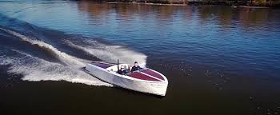

Electric drives for sailors
Torqeedo offers electric drives for sailboats from dinghies to yachts up to 120 feet: compact and powerful outboards, light and space-saving pod drives, one of the most powerful electric saildrives on the market, and the world's first fully integrated hybrid propulsion and energy management system from industrial production. Orderable right here in the onlineshop.

Enjoy a clean and quiet life on the water. Outboards from our Travel and Cruise series offer up to 25 horsepower of lightweight and emission-free fun. Need more power? Deep Blue, the first industrially produced, high-performance electric drive system for motorboats is available as outboard and inboard systems up to 100 kW.